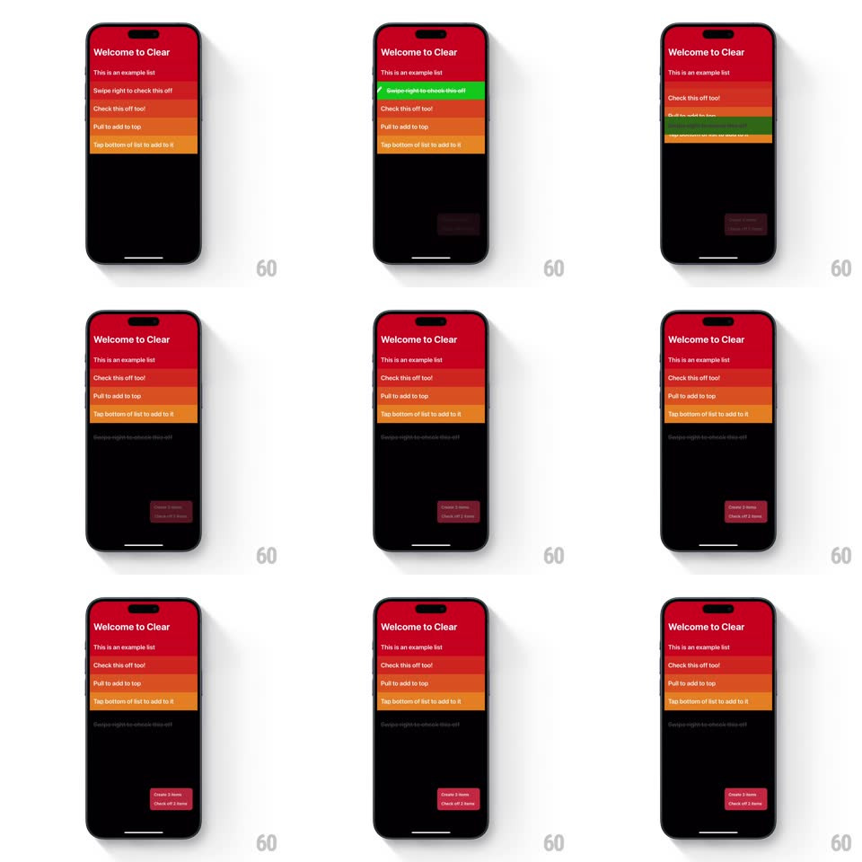

Media
Frame-by-frame

Rebuild this interaction 1:1: Clear's swipe-to-complete - swiping a heat-gradient row right floods it green, it flies to the bottom of the list dimmed with a strikethrough, and every row above the gap slides up one slot.

Rebuild this interaction 1:1: Clear's swipe-to-complete - swiping a heat-gradient row right floods it green, it flies to the bottom of the list dimmed with a strikethrough, and every row above the gap slides up one slot.
## Integration
Integration: stack-agnostic spec - springs given as stiffness/damping, timed motions as duration + curve; map every value to your framework and animation library of choice.
## Scene
The Clear tutorial list: red-to-orange rows ("This is an example list", "Swipe right to check this off", "Check this off too!", ...), black surround, a small status pill bottom-right ("Cleared 1 item / Check off 2 items").
## Motion spec
Pattern: swipe-flood green, then gravity drop.
- Swipe right: the row tracks 1:1 while a green flood wipes across it from the left edge, chasing the finger; the title gains a strikethrough as the flood passes it.
- Release past ~45%: the row completes its green fill (150ms), then slides down THROUGH the list to the bottom slot (350ms, ease-in-out), dimming to ~35% opacity as it travels; every row between its old and new position slides up one slot with the same timing, each re-coloring one gradient step up (300ms).
- The status pill updates its counts with a quick digit pop (scale 1 -> 1.2 -> 1, 200ms).
- Release early: the green drains back left and the row springs home (~300/20).
## Calibration
- Completed rows live at the bottom in reverse completion order, always dimmed.
- The re-color cascade must land on all rows in one synchronized crossfade - no per-row delay.
## Reduced motion
Row fades to its bottom slot; no flood wipe.
## Don't miss
- The green flood is a wipe, not a tint - it visibly chases the finger.
- The row passes OVER its siblings while dropping (slight scale 1.03 + shadow), never through them flat.